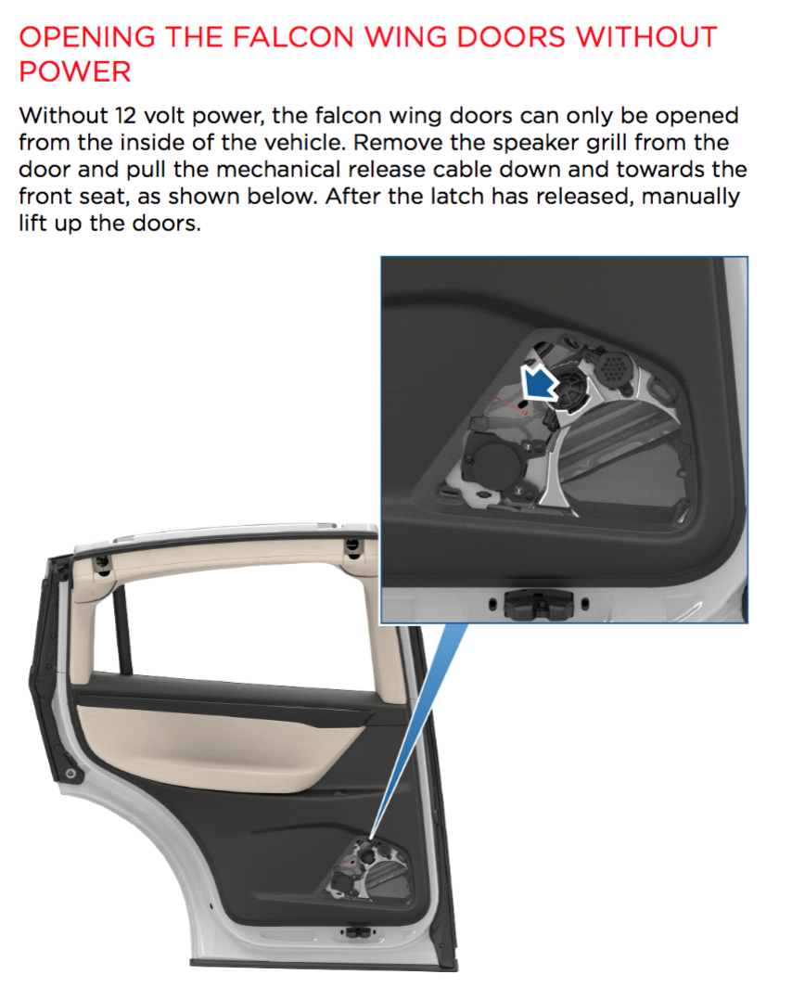

Why "Falcon Wing Doors" is a bad ideaTesla's new SUV, the Model X, has a very special back door design. They open like "falcon wings", thus are called "Falcon Wing Doors". Although looking futuristic and may help with tight parking spaces, this design has several potential problems. Delayed escape during accidentIf an accident happens and there is a fire, how quickly can you escape? You will get quite trapped in a Model X. When the car loses power, according to Model X's "Emergency Response Guide", there is a very complicated procedure to follow before you can open the Falcon Wing Doors.  First of all, notice that without power, there is no way that the door can be opened from the outside. This means that the firefighters can't help you much! If you are lucky enough-you are not injured, you are not scared, you successfully get out of the trap of the airbags, you have to do the following three complicated movements:
How do you remove the speaker grill? Doh.. Honestly, having hammer and screw driver ready in a Model X may be a good idea ;-) Reduced utility
Vulnerability in weather
ParkingAlthough the doors may help with parking in horizontally tight spaces, they are troublesome in vertically tight spaces. They may hit the roof in some garages, like this one. Even if the sensors prevented the doors to hit the roof, the back passengers may have trouble getting out through the half-open doors. Indeed they are easier to open in horizontally tight parking spaces. But, how often do you park in such tight spaces? If that happens, can't you just drop off the back passengers before pulling in? Can't sliding doors provide the same benefits? Manufacturing and maintenanceThe machinery of these doors is overly complicated. They are difficult and expensive to manufacture, prone to mechanical problems, and difficult to repair. Take a look at the news, and see how a legitimate supplier of hydraulic lifters to other famous brands (such as Cadillac) failed to meet the Falcon Doors' ridiculous requirements. HandlingBecause the Falcon Wing Doors' complexity, it increases the center of gravity of the car. This decreases the stability of the car and cornering abilities. Also when parking on uneven ground, the high profile of the doors make the car unstable. Not beautiful or fancyWith this novel door design, the Model X doesn't really look beautiful, friendly, or fancy. It looks like a Prius. It's nowhere close to Ferrari, Lamborghini or McLaren. Notice that the "scissor doors" of the hyper cars don't really have some of the problems of Model X's Falcon Wing Doors. The Model X (with the doors open) looks like a falcon, ready for an aggressive move. Not feeling friendly. With these in mind, and the fact that Space X's rockets are named "Falcon", the Falcon Wing Doors feels more like an gimmick and over-engineering than a useful/beautiful design. There really is no need to make car doors looking like falcon wings. |